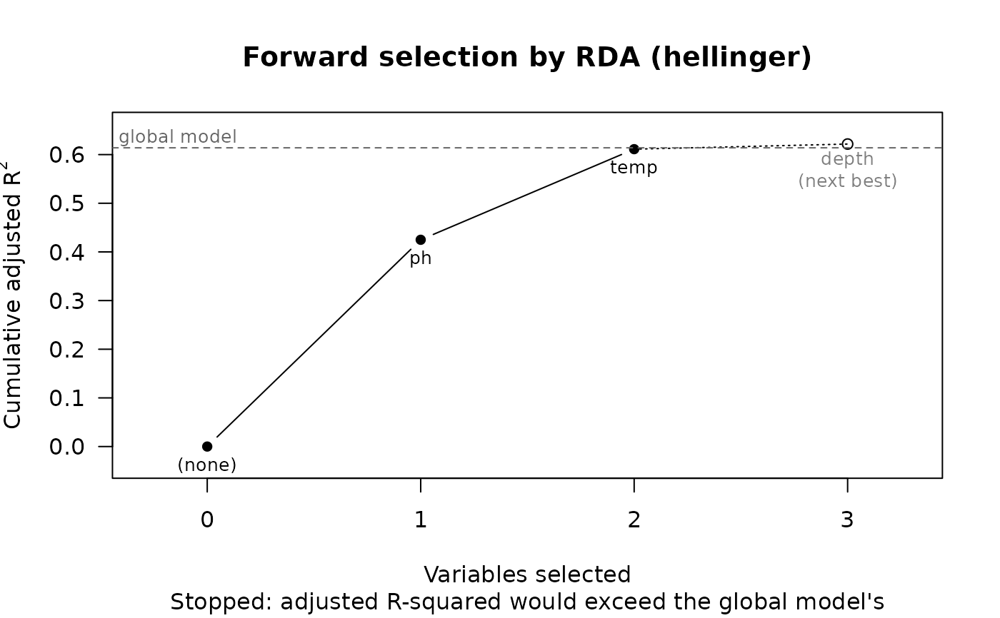

Picks, one at a time, the explanatory variables that best explain a
community, by redundancy analysis of a count table (rda()) or
distance-based redundancy analysis of distances (dbrda()). At each step
the variable that raises the adjusted \(R^2\) most is added, if a
permutation test of it (given the variables already chosen) is
significant, and if the adjusted \(R^2\) stays within that of all the
candidates together: the double stopping rule of Blanchet et al. (2008),
as in vegan::ordiR2step(), with the same results. Usually run before
varpart().
Usage
forward_select(
x,
formula = NULL,
data,
norm = "none",
pseudocount = NULL,
margin = 1L,
alpha = 0.05,
max_vars = NULL,
global_test = TRUE,
permutations = 999L,
strata = NULL,
seed = 0L,
cpus = n_cpus()
)Arguments
- x
The community: a
distobject of distances among the samples, such as frombeta_div()orbray(), for db-RDA; or a count table (samples \(\times\) features, or any of the table types listed under "Input Types"), for RDA. A plain matrix is always a table; give distances as adistobject (as.dist(m)).- formula
A one-sided formula naming the candidate variables in
data, such as~ ph + temp + depth(vegan'sscope). Each term is one candidate: a factor enters whole, with all its contrasts, and an interaction becomes a candidate only once the terms it contains are chosen. Variables wrapped inCondition()are not candidates: every model, test, and adjusted \(R^2\) is conditioned on them (partial RDA), as whenordiR2step()starts from a partial model. Default:NULL, every column ofdata(exceptstrata) as a candidate.- data
Sample metadata: a data frame with one row per sample, holding the variables in
formula(andstrata). Rows are matched to the samples ofxby row name, and rows for other samples are ignored; without row names, they must be in the samples' order.- norm
Normalize the incoming counts. Options are:
'none': No transformation.'percent': Relative abundance (sample abundances sum to 1).'hellinger': Square root of relative abundance (the Hellinger transformation).'binary': Unweighted presence/absence (each count is either 0 or 1).'clr': Centered log ratio.'rclr': Robust centered log ratio.'log': Log relative abundance (log-TSS), withpseudocountadded to every value first.
Default:
'none'.- pseudocount
Value added to counts to handle zeros when
norm = 'clr'or'log'. Ignored for other normalization methods. See Pseudocount section.- margin
The margin containing samples.
1if samples are rows,2if samples are columns. Ignored whencountsis a special object class (e.g.phyloseq). Default:1- alpha
The significance level: a variable is added only if its permutation p-value is at most
alpha(vegan'sPin). Default:0.05.- max_vars
The most terms to select, or
NULLfor no limit (as adespatial'sforward.sel(K)). Default:NULL.- global_test
Test the global model (all the candidates together) first, and select nothing if it is not significant (p-value above
alpha), as Blanchet et al. (2008) recommend.FALSEskips the test, asordiR2step()does. Default:TRUE.- permutations
The number of permutations for each test. Default:
999. Alternatively, a matrix with one permutation of1:nper row, as frompermute::shuffleSet(), to use instead of random ones; the same permutations then serve every test, as when the same matrix is given toordiR2step().0runs no tests: variables are then chosen by adjusted \(R^2\) alone (rules 1, 2 and 4 below),alphais not used, and p-values areNA.- strata
Permute samples only within these groups (blocks): the name of a column of
data, or a vector with one value per row ofdata(or, withoutdatarow names, per sample). For other restricted designs, give apermutationsmatrix instead. Default:NULL.- seed
With
chisquare = TRUEand a number ofpermutations: the random seed for the permutations. Not used otherwise. Default:0.- cpus
How many parallel processing threads should be used. The default,
n_cpus(), will use all logical CPU cores.
Value
A data frame of class c('ecodive_forward_select', 'data.frame'), with one row per variable selected, in the order
selected (no rows if none was), and columns:
variable: The term added.df: The number of model columns it adds.r_squared: The \(R^2\) it adds.r_squared_cum: The \(R^2\) of the model with it and every variable before it.adj_r_squared: The adjusted \(R^2\) it adds.adj_r_squared_cum: The adjusted \(R^2\) of the model with it and every variable before it (ordiR2step()'sR2.adj).F: The pseudo-\(F\) of the variable, given the variables before it (and anyCondition()terms).p_value: Its permutation p-value.
Attributes:
selected: A one-sided formula of the variables selected, in order, ready forvarpart()orrda()(~ 1if none was).Condition()terms are not included.global: A one-row data frame of the global model, all candidates together (given anyCondition()terms):df,r_squared,adj_r_squared,F, andp_value(NAwithoutglobal_test).stop: Why selection stopped:'global test not significant','no candidates left','adjusted R-squared does not increase','adjusted R-squared would exceed the global model\'s','not significant', or'max_vars reached'.next_best: The candidate that would have been added next, as a one-row data frame with the same columns as the result (p_valueisNAif it was not tested), orNULL.method:'rda'or'dbrda'.norm: The normalization, for RDA.n: The number of samples.n_perm: The number of permutations per test.permutation: How samples were permuted:'free','within strata', or'supplied matrix'.
Details
Method
With the variables chosen so far, \(S\) (and any Condition() terms,
\(Z\)), each remaining candidate \(t\) gives a model \(S + t\),
whose adjusted \(R^2\) is Ezekiel's, \(1 - (1 - R^2)(n - 1)/(n - m
- 1)\) for \(n\) samples and \(m\) model columns (with conditions, the
adjusted \(R^2\) of \(Z + S + t\) less that of \(Z\), as
vegan::RsquareAdj() gives it). The best candidate is added if:
its adjusted \(R^2\) is higher than that of \(S\);
its adjusted \(R^2\) is no higher than that of the global model, with every candidate (skipped if the global model has no residual degrees of freedom);
its permutation test has a p-value of at most
alpha; andfewer than
max_varsvariables have been chosen.
Otherwise selection stops. The test of rule 3 is that of vegan's
anova() of the two nested models, \(Z + S\) and \(Z + S + t\):
the pseudo-\(F\) of the sum of squares that \(t\) adds, over the
residual of the larger model, where for each permutation each model's
sum of squares is recomputed with the samples permuted (after removing
\(Z\)'s effect, as in permanova()). Without Condition() terms this
is a plain permutation of the samples. (It differs slightly from a test
of ~ t + Condition(S + Z), which permutes the residuals of \(S\)
too.) The global model is tested as permanova() tests it. Every test
uses the same permutations.
Rules 1 to 3 are ordiR2step()'s; rule 2
guards against the inflated type I error and overestimated explained
variation of forward selection (Blanchet et al. 2008).
Speed
One pass over the table's non-zeros (or the distances) gives the cross
products of every candidate's columns, from which every candidate's
adjusted \(R^2\), at every step, follows without another pass (as in
varpart()). Only the chosen candidate of each step is tested, with the
permutation kernel of permanova(), in parallel, reading the distances
as a packed triangle; for RDA, the Euclidean distances among the
(normalized) samples, which give the same test. Results are identical
for any number of cpus.
Differences from vegan::ordiR2step()
The result is a data frame of the steps, not the final model; the steps' table is close to
ordiR2step()'sanovacomponent.The global model is tested first, by default (
global_test).max_varslimits the number of variables.There is no CCA (
ordiR2step()oncca()models); use RDA of a Hellinger-normalized table instead.vegan's
ordiR2step()chooses the scope from a formula with the table on its left; here the community isx, andformulalists the candidates.
Input Types
The counts parameter is designed to accept a simple numeric matrix, but
seamlessly supports objects from the following biological data packages:
phyloseqrbiomSummarizedExperimentTreeSummarizedExperiment
For large datasets, standard matrix operations may be slow. See
vignette('performance') for details on using optimized formats
(e.g. sparse matrices) and parallel processing.
Pseudocount
The pseudocount parameter is only relevant when norm = 'clr'
or norm = 'log'.
Zeros are undefined in the centered log-ratio (CLR) transformation and
in the log of proportions. If norm is 'clr' or
'log', pseudocount is NULL (the default), and
zeros are detected, the function uses half the minimum non-zero value
(min(x[x>0]) / 2) and issues a warning.
To suppress the warning, provide an explicit value (e.g., 1), or
replace the zeros first with replace_zeros(), whose
result needs no pseudocount.
Why this matters: The choice of pseudocount is not neutral; it acts as a weighting factor that can significantly distort downstream results, especially for sparse datasets. See Gloor et al. (2017) and Kaul et al. (2017) for open-access discussions on the mathematical implications, or Costea et al. (2014) for the impact on community clustering.
See aitchison for references.
References
Blanchet, F. G., Legendre, P., & Borcard, D. (2008). Forward selection of explanatory variables. Ecology, 89, 2623-2632. doi:10.1890/07-0986.1
Examples
# 40 samples: four environmental variables, two of which matter.
set.seed(1)
meta <- data.frame(
ph = runif(40, 5, 8),
temp = runif(40, 10, 20),
depth = runif(40),
site = factor(rep(c('a', 'b', 'c', 'd'), 10)) )
counts <- matrix(rpois(40 * 15, 4), 40, 15)
counts[, 1:5] <- counts[, 1:5] + round(10 * (meta$ph - 5))
counts[, 6:9] <- counts[, 6:9] + round(2 * (meta$temp - 10))
# tb-RDA on the Hellinger-normalized table.
fs <- forward_select(counts, ~ ph + temp + depth + site, meta, norm = 'hellinger')
fs
#> Forward selection by RDA (hellinger): 40 samples
#> Permutations: 999 (free)
#> Global model: 6 df, adj. R-squared 0.6140, F = 11.34, p = 0.001
#>
#> variable df r_squared r_squared_cum adj_r_squared adj_r_squared_cum F
#> 1 ph 1 0.4397 0.4397 0.4249 0.4249 29.82
#> 2 temp 1 0.1914 0.6311 0.1862 0.6112 19.20
#> p_value
#> 1 0.001
#> 2 0.001
#>
#> Stopped: adjusted R-squared would exceed the global model's.
#> Next best: depth (adj. R-squared 0.6217)
#> Selected: ~ph + temp
plot(fs)

# db-RDA on Bray-Curtis distances, then partition the variation.
fs <- forward_select(bray(counts), ~ ph + temp + depth + site, meta)
attr(fs, 'selected')
#> ~ph + temp
#> <environment: 0x62791f1bbce8>
varpart(bray(counts), env = attr(fs, 'selected'), site = ~ site, data = meta)
#> Variation partitioning by db-RDA: 40 samples, 2 sets
#> Total inertia: 1.5469
#>
#> env attr(fs, "selected") 2 df, adj. R-squared 0.7798
#> site ~site 3 df, adj. R-squared -0.0039
#> All 5 df, adj. R-squared 0.7722
#>
#> +- env ---------------------+
#> | +-----------+---------------+
#> | [a] | [c] | |
#> | 0.7762 | 0.0036 | [b] |
#> | | | -0.0075 |
#> +---------------+-----------+ |
#> +- site --------------------+
#> Residuals [d] 0.2278
#>
#> sets df r_squared adj_r_squared testable
#> [a] env 2 0.7281 0.7762 TRUE
#> [b] site 3 0.0104 -0.0075 TRUE
#> [c] env & site NA 0.0629 0.0036 FALSE
#> [d] residuals NA 0.1986 0.2278 FALSE
# Conditioned on site.
forward_select(bray(counts), ~ ph + temp + depth + Condition(site), meta)
#> Forward selection by db-RDA: 40 samples
#> Permutations: 999 (free)
#> Global model: 3 df, adj. R-squared 0.8003, F = 48.16, p = 0.001
#>
#> variable df r_squared r_squared_cum adj_r_squared adj_r_squared_cum F
#> 1 ph 1 0.5344 0.5344 0.5668 0.5668 47.680
#> 2 temp 1 0.1937 0.7281 0.2093 0.7762 33.170
#> 3 depth 1 0.0262 0.7544 0.0241 0.8003 5.026
#> p_value
#> 1 0.001
#> 2 0.001
#> 3 0.010
#>
#> Stopped: no candidates left.
#> Selected: ~ph + temp + depth